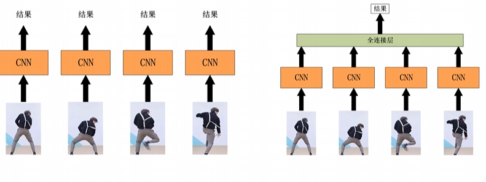
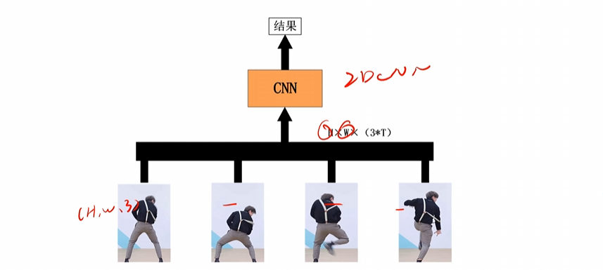
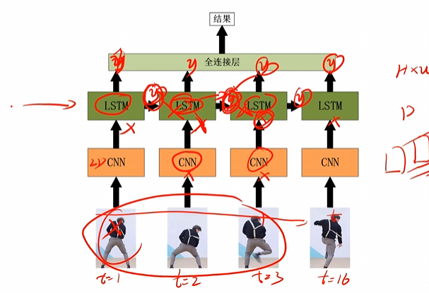
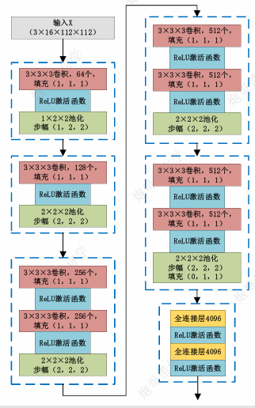
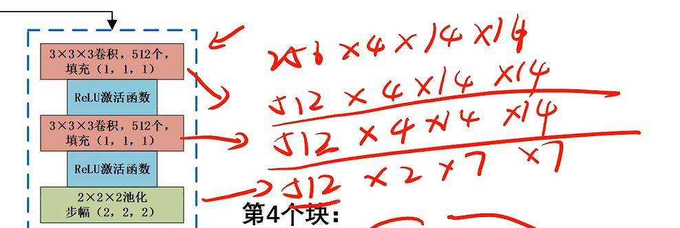

# 3DCNN 视频行为检测平台笔记
学习内容基于：https://www.bilibili.com/video/BV1kc411Q7Tj
# 图像的本质
图像是由 RGB 三通道组成的，一般数值范围是 0 到 255.
因此像素矩阵为：H * W * 3，其中 H 为高，W 是宽。
# 从图像到视频
视频本质上是由连续的图片（视频帧），快速播放构成的。
图片的像素矩阵是 H * W * 3
视频就是 D * H * W * 3，其中 D 是深度，是视频帧的叠加。
不同的库对与这 4 个维度顺序表述不同，但这四个维度诚然如此。
# 2D 检测方法对比
  # C3D 网络流程
这个（1，1，1），三个数字是有点手法的，第一个数是代表了深度，第二个、第三个代表了高和宽。
我们可以看到，一般来说这个卷积核大小一般是（3，3，3），填充是（1，1，1），经过这样的卷积过后，特征图大小不变。
这里是 up 的解释，已经是非常的直观易懂。
# 动手搭建一个 C3D
import torch | |
from torch import nn | |
from torchsummary import summary | |
class C3D(nn.Module): | |
def __init__(self, num_classes, *args, **kwargs) -> None: | |
super().__init__(*args, **kwargs) | |
self.block1 = nn.Sequential( | |
nn.Conv3d(3, 64, kernel_size=(3, 3, 3), padding=(1, 1, 1)), | |
nn.ReLU(), | |
nn.MaxPool3d(kernel_size=(1, 2, 2), stride=(1, 2, 2)) | |
) | |
self.block2 = nn.Sequential( | |
nn.Conv3d(64, 128, kernel_size=(3, 3, 3), padding=(1, 1, 1)), | |
nn.ReLU(), | |
nn.MaxPool3d(kernel_size=(2, 2, 2), stride=(2, 2, 2)) | |
) | |
self.block3 = nn.Sequential( | |
nn.Conv3d(128, 256, kernel_size=(3, 3, 3), padding=(1, 1, 1)), | |
nn.ReLU(), | |
nn.Conv3d(256, 256, kernel_size=(3, 3, 3), padding=(1, 1, 1)), | |
nn.ReLU(), | |
nn.MaxPool3d(kernel_size=(2, 2, 2), stride=(2, 2, 2)) | |
) | |
self.block4 = nn.Sequential( | |
nn.Conv3d(256, 512, kernel_size=(3, 3, 3), padding=(1, 1, 1)), | |
nn.ReLU(), | |
nn.Conv3d(512, 512, kernel_size=(3, 3, 3), padding=(1, 1, 1)), | |
nn.ReLU(), | |
nn.MaxPool3d(kernel_size=(2, 2, 2), stride=(2, 2, 2)) | |
) | |
self.block5 = nn.Sequential( | |
nn.Conv3d(512, 512, kernel_size=(3, 3, 3), padding=(1, 1, 1)), | |
nn.ReLU(), | |
nn.Conv3d(512, 512, kernel_size=(3, 3, 3), padding=(1, 1, 1)), | |
nn.ReLU(), | |
nn.MaxPool3d(kernel_size=(2, 2, 2), stride=(2, 2, 2), padding=(0, 1, 1)) | |
) | |
self.fc = nn.Sequential( | |
nn.Linear(8192, 4096), | |
nn.ReLU(), | |
nn.Dropout(p=0.5), | |
nn.Linear(4096, 4096), | |
nn.ReLU(), | |
nn.Dropout(p=0.5), | |
nn.Linear(4096, num_classes) | |
) | |
self._init_weights() | |
def forward(self, x): | |
x = self.block1(x) | |
x = self.block2(x) | |
x = self.block3(x) | |
x = self.block4(x) | |
x = self.block5(x) | |
x = x.flatten(start_dim=1) | |
x = self.fc(x) | |
return x | |
def _init_weights(self): | |
for m in self.modules(): | |
if isinstance(m, nn.Conv3d): | |
nn.init.kaiming_normal_(m.weight, mode='fan_out', nonlinearity='relu') | |
if m.bias is not None: | |
nn.init.constant_(m.bias, 0) | |
elif isinstance(m, nn.Linear): | |
nn.init.normal_(m.weight, 0, 0.01) | |
if __name__ == '__main__': | |
model = C3D(num_classes=101) | |
print(summary(model, (3, 16, 112, 112), device='cpu')) |
# 预训练权重
比如，有一个猫狗分类的模型，权重和偏置已经训练好了，但是现在有一个新任务，就是狼和老虎进行分类，我们就可以用猫狗分类的权重来继续训练狼和老虎分类，这样的话会加速我们的训练速度，非常方便。
@staticmethod | |
def __load__pretrained_model(): | |
p_dict = torch.load('./ucf101-caffe.pth') | |
s_dict = model.state_dict() | |
corresp_name = { | |
'features.0.weight': 'block1.0.weight', | |
'features.0.bias': 'block1.0.bias', | |
'features.3.weight': 'block2.0.weight', | |
'features.3.bias': 'block2.0.bias', | |
'features.6.weight': 'block3.0.weight', | |
'features.6.bias': 'block3.0.bias', | |
'features.8.weight': 'block3.2.weight', | |
'features.8.bias': 'block3.2.bias', | |
'features.11.weight': 'block4.0.weight', | |
'features.11.bias': 'block4.0.bias', | |
'features.13.weight': 'block4.2.weight', | |
'features.13.bias': 'block4.2.bias', | |
'features.16.weight': 'block5.0.weight', | |
'features.16.bias': 'block5.0.bias', | |
'features.18.weight': 'block5.2.weight', | |
'features.18.bias': 'block5.2.bias', | |
'classifier.0.weight': 'fc.0.weight', | |
'classifier.0.bias': 'fc.0.bias', | |
'classifier.3.weight': 'fc.3.weight', | |
'classifier.3.bias': 'fc.3.bias' | |
} | |
for name in p_dict: | |
if name not in corresp_name: | |
continue | |
s_dict[corresp_name[name]] = p_dict[name] |
像这样，我们就可以做参数移植了